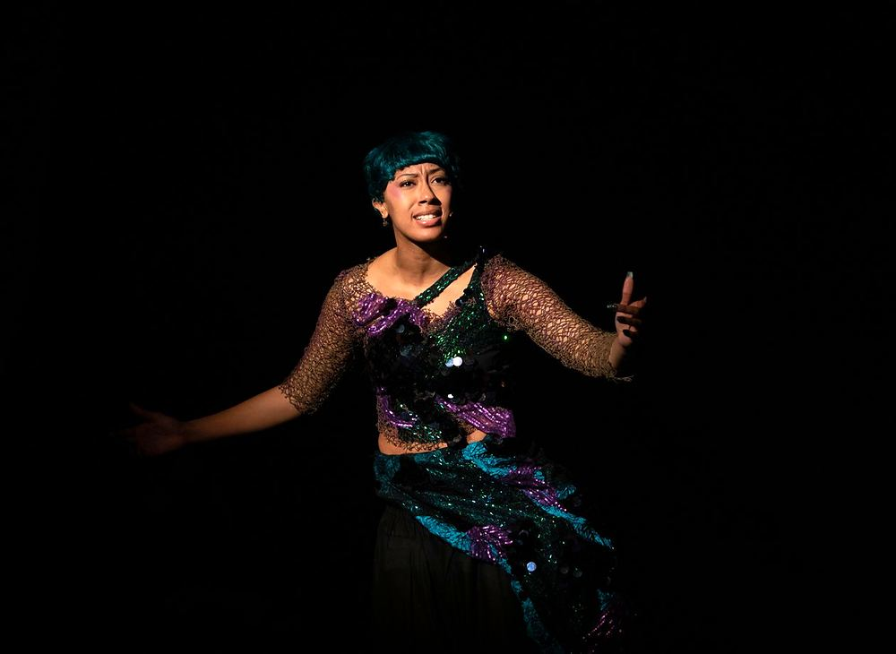
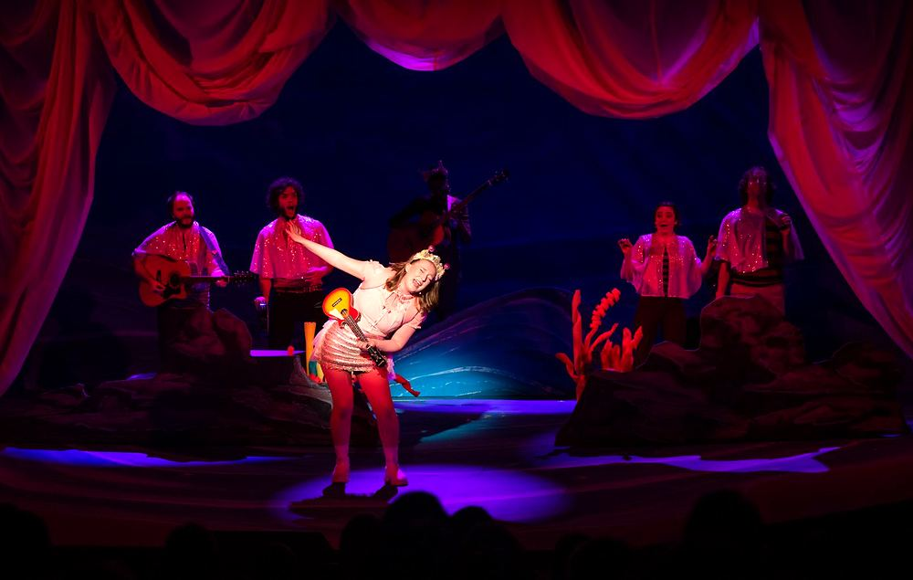
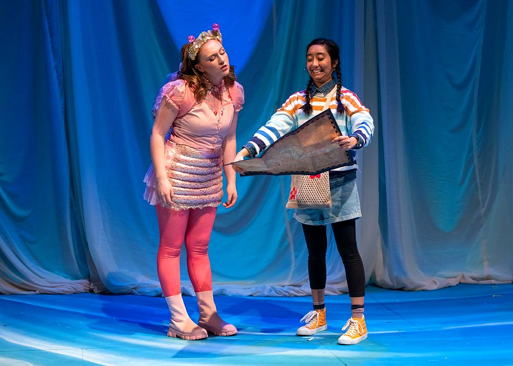
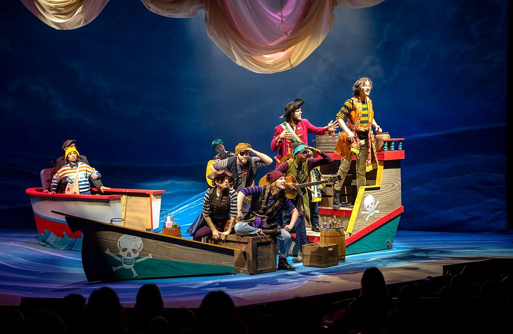
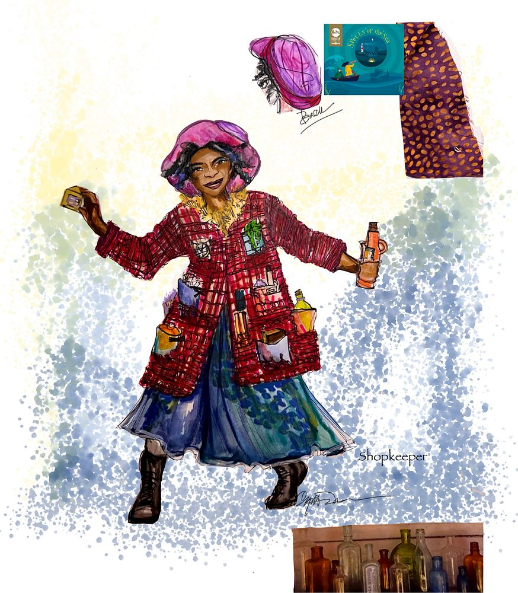

Home / Plays & Musicals Spells of the Sea (In Development) A New Musical (In Development)Book, music, and lyrics by Guinevere GoveaDirected by: Julia Flood  ← Super You (In Development)Sistas (Off Broadway) →